系统：云南基层责任单元服务支撑
地址:http://130.86.10.199:10002/portal/platform/index.jsp#
一．权限分配
地市管理员可分配
系统管理=>用户管理=>搜索=>修改=>选择角色=>2I2C;
图文：
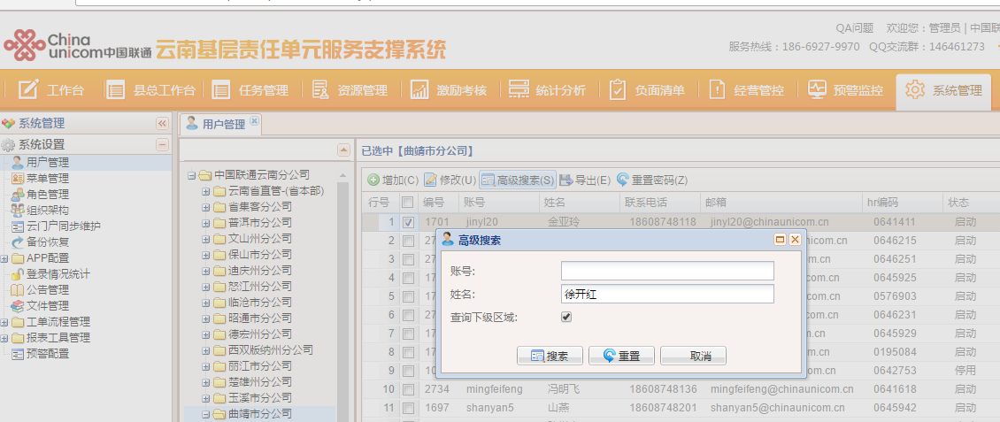
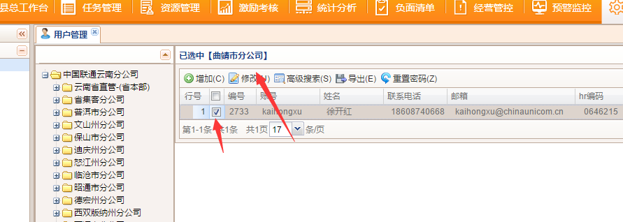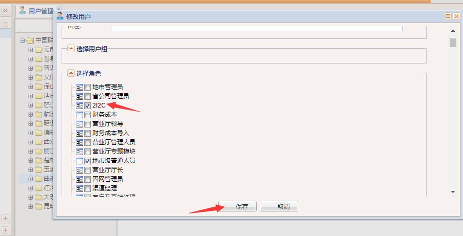
二.2I2C任务具体步骤
模块路径：资源管理=>2I2C业务
1.任务的导入
图文步骤:
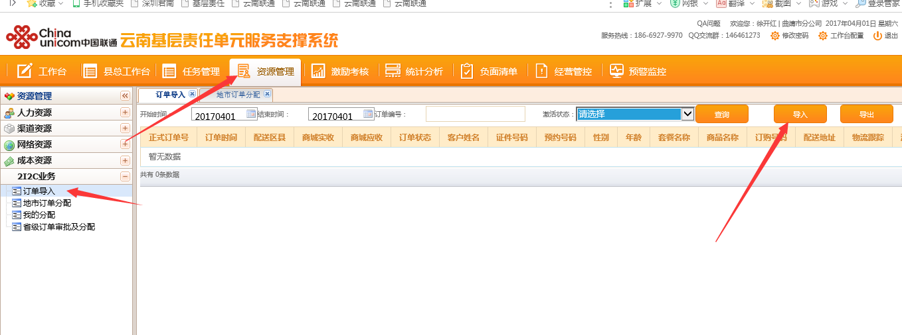
模版下载时跟上传的时候为同一模版不能私自在模版中加多余的列。
注意事项：上传的模板必须要与模板下载的一致，表头不能有多列或少列；单元格必须要有实线边框；模板中不能有公式，拉伸或者特殊格式；数字列请设置为文本格式，否则会被Excel转化为科学计数法；上传出现错误时可以将数据复制到页面下载的模板中再上传。
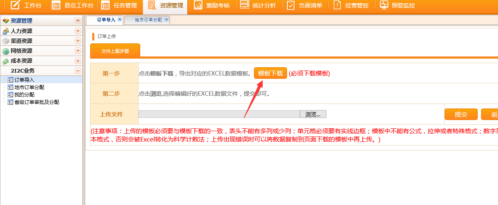
订单样式：
订单信息填写完毕之后选择浏览找到模版，之后选择提交。
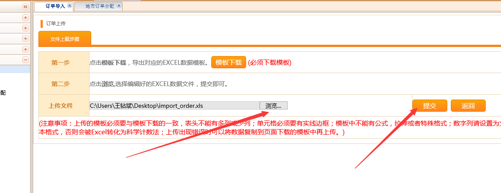
此分配是不能进行选择性的分配，即分配所有剩余的订单。
图文步骤:
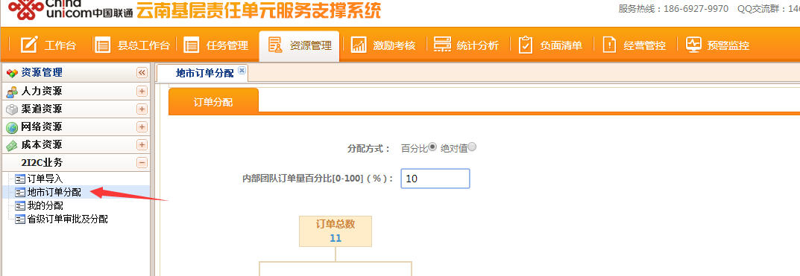
订单的分配：
(1)地市选选择分配方式
(2)根据第一步选择的分配方式配置输入内部团队所占的百分比或者绝对值，输入完成后程序自动计算各团队的订单数
(3)点分配按钮并提示分配成功；之后提交分配结果到省互联网部进行审核
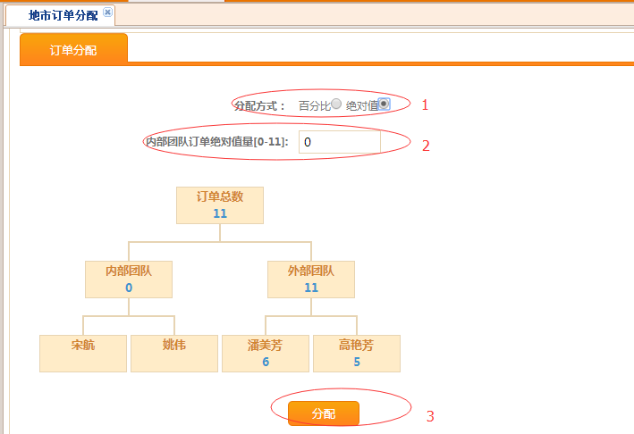
到此地市操作已经结束。可以到我们分配模块里面查看已经分配订单。
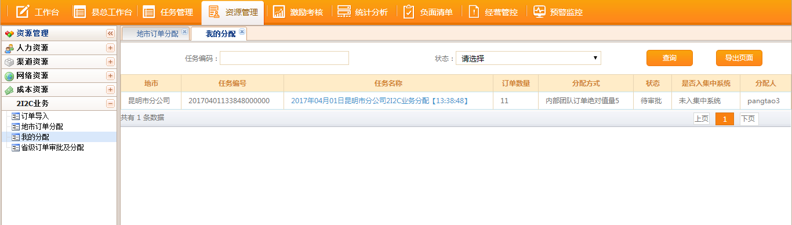
点任务名称可以看到订单的分配详情
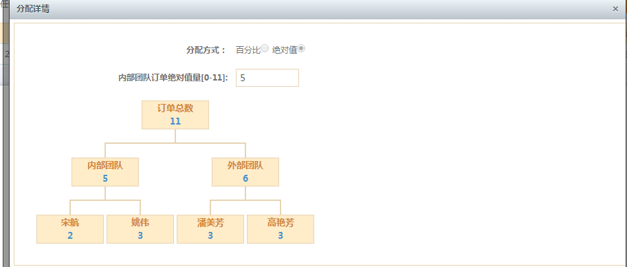
点击数字可以看到订单的明细
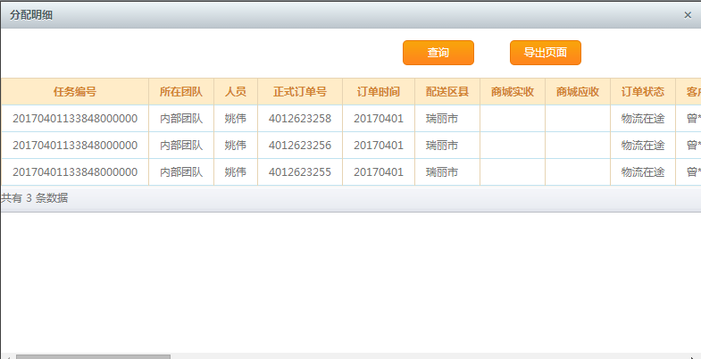
省级人员的操作模块
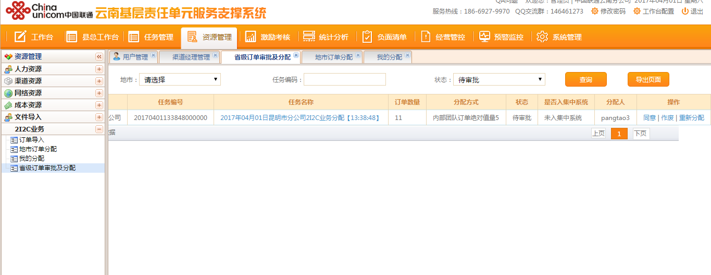
点订单名称可以看到地市订单的分配详情;
点同意即同意地市分配的方案;
点重新分配即省公司人员对该批订单进行二次分配;
Created with the Personal Edition of HelpNDoc: Single source CHM, PDF, DOC and HTML Help creation